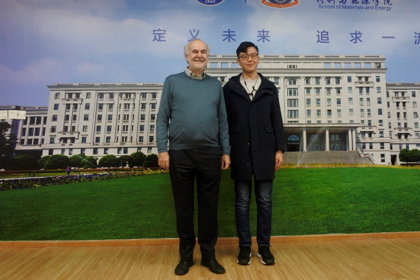

Haodong WuUndergraduate
Glasgow College |
 |
Achieving ultra-low concentration hydrogen isotope separation via electrochemical hydrogen compressor in tritium extraction system and coolant purification system. Haodong Wu, Ziqiang Li, Yingqing Liao, Kashif Khan, Tianyong Luo*, Bin Lin* (co-first author), Nature Communication [Manuscript under consideration]
A new mechanism of photocatalytic hydrogen molecule generation induced by negative state of H in TiO2. Xiao-Xi Chen, Haodong Wu, Guo-Qing Wang, Tian-Yong Luo*, Bo Xu (co-first author), Nano Letters [Under Review]
Enhanced ORR activity of A-site deficiency engineered BaCo0.4Fe0.4Zr0.1Y0.1O3-δ cathode in practical YSZ fuel cells. Wei Wang, Xiaozhen Zhang, Kashif Khan, Haodong Wu, Dandan Zhang, Yang Yang, Yuhua Jiang, Bin Lin*， International Journal of Hydrogen Energy [Under Review]
Exploiting rare-earth-abundant layered perovskite cathodes of LnBa0.5Sr0.5Co1.5Fe0.5O5+δ (Ln=La and Nd) for SOFCs. Quan Yang, Dong Tian, Rui Liu, Haodong Wu, Yonghong Chen, Yanzhi Ding, Xiaoyong Lu, Bin Lin*. International Journal of Hydrogen Energy [Under Review]
一种含氢混合气体高温条件下氢同位素提取组件 申请号：201910919469 .8 林彬，罗天勇，刘诗源，武浩东，刘睿，程琪 [发明]
一种烧结钕铁硼生产用破碎及冷却系统 申请号：P202020946 罗天勇，武浩东，黄浩，廖颖晴 [实用新型]
一种用于烧结钕铁硼制备的真空熔炼炉加料装置 申请号：P202020963 罗天勇，武浩东，黄浩，廖颖晴 [实用新型]
一种用于烧结钕铁硼毛坯体的真空镀膜系统 申请号：P202020980 罗天勇，武浩东，黄浩，廖颖晴 [实用新型]
一种用于烧结钕铁硼磁粉的筛分装置 申请号：P202020981 罗天勇，武浩东，黄浩，廖颖晴 [实用新型]
一种用于烧结钕铁硼甩带片外观检查的智能监测系统 申请号：P202021008 罗天勇，武浩东，黄浩，廖颖晴 [实用新型]